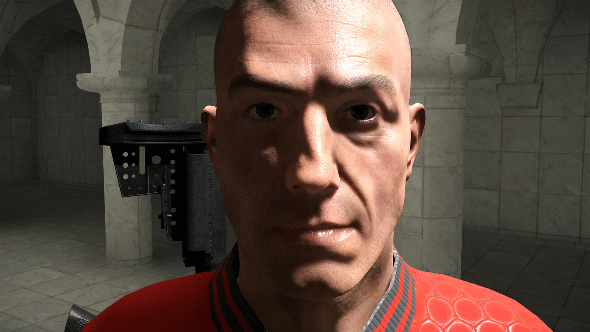

Обзор
Эту функцию можно использовать в сочетании с картами теней для предотвращения смещения и эффектов низкого разрешения в объектах. Это улучшает качество обычных карт теней, не увеличивая накладные расходы на CPU и GPU. Этот эффект можно реализовать для объектов в радиусе 3 метров от камеры.
Реализация
Чтобы активировать эту функцию, включите cvar r_ShadowsScreenSpace из консоли.
Рис. 1. Пример детальных теней экранного пространства, использованных в сцене.
